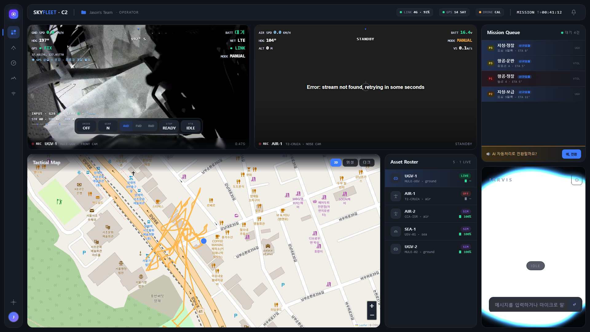

SUPPO
RTY
← 메인으로
OPERATOR CONSOLE · SKYFLEET C2
라이브 오퍼레이터 콘솔
실서버 콘솔은 시연 기간 동안 운영됩니다. 접속이 안 될 경우(서버 점검·시연 종료 등)를 대비해 아래에 실제 운용 화면 캡처를 함께 제공합니다.
실서버 콘솔 접속 →
로컬 데모 콘솔(오프라인용)
실서버 상태: 직접 접속해서 확인해주세요 (HTTPS 페이지에서 자동 확인 불가)

SKYFLEET C2 — OPERATOR CONSOLE · 실제 운용 화면 캡처
UGV-1 LIVE · MISSION QUEUE 대기 4건 · ASSETS 5 · 2026.07.05